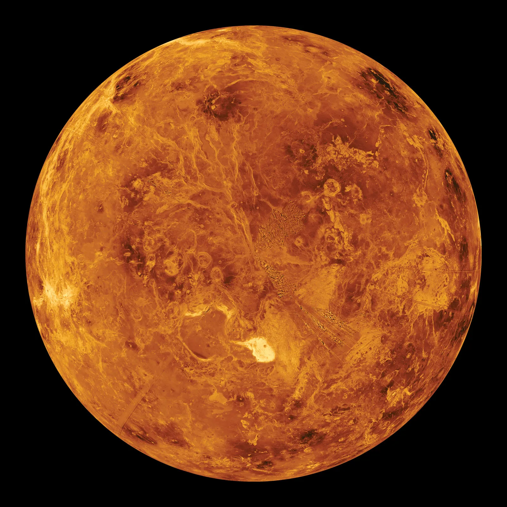

Venuše je druhá planeta od Slunce a je často označována jako „sesterská planeta Země“ kvůli podobné velikosti a složení.
Povrch Venuše je kamenitý a pokrytý vulkanickými pláněmi a horami. Hustá atmosféra však znemožňuje přímé pozorování povrchu bez sond.
Atmosféra Venuše je extrémně hustá a tvořená hlavně oxidem uhličitým. Obsahuje také oblaka kyseliny sírové a vytváří silný skleníkový efekt.
Venuše je nejteplejší planeta Sluneční soustavy, i když není nejblíže ke Slunci. Její rotace je velmi pomalá a dokonce se otáčí opačným směrem než většina planet.

Průměrná teplota na Venuši je kolem 465 °C, což z ní dělá nejteplejší planetu Sluneční soustavy.
Jeden den na Venuši trvá déle než jeden její rok. Planeta se otáčí velmi pomalu a opačným směrem.